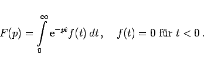
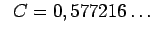

Inhalt
Index
DeskTop Bronstein
Tabellen
Laplace-Transformationen

Die in der Tabelle auftretende Konstante
C
ist die
E
ULER
sche Konstante

.
Laplace-Transformationen, Seite 1 von 6
Laplace-Transformationen, Seite 2 von 6
Laplace-Transformationen, Seite 3 von 6
Laplace-Transformationen, Seite 4 von 6
Laplace-Transformationen, Seite 5 von 6
Laplace-Transformationen, Seite 6 von 6